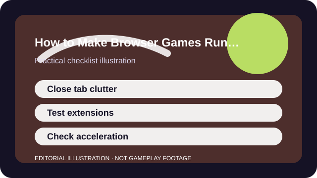

QUICK ANSWER
The short version
Treat the browser like part of the game client: clear the extra load, test acceleration and extensions one by one, and compare in the same tab conditions.
Browser games compete with every other tab, extension, notification, and media stream you leave open. That makes performance troubleshooting messier than a single installed game where the client controls most of the environment.
The upside is that the safest fixes are often simple: less tab clutter, fewer conflicting extensions, and a clean test of whether hardware acceleration helps or hurts the specific game you care about.

CHECKLIST
What to confirm before you change anything
- Update the browser and restart it cleanly before testing anything else.
- Close heavy media tabs, streams, or web apps that share the same browser process.
- Test once with extensions disabled or in a clean profile if the browser supports it.
- Check whether hardware acceleration is on and compare one state against the other.
- Use the same game, same scene, and same browser window size for every comparison.
A browser game can look unstable simply because the browser is carrying too much unrelated work. Good testing strips that background noise first.
SCENARIO
When a no-download game runs worse than a fully installed game
Players often assume browser games should be lighter by default because they are smaller or easier to launch. In reality, a browser title can feel worse if the browser is juggling many tabs, extensions, or multimedia tasks at the same time.
That makes the first useful question simple: does the game improve in a fresh, quiet browser state? If it does, you are solving browser overhead more than you are solving the game itself.
PROCESS
A repeatable way to work through it
Isolate browser overhead
Start with a clean session so you can tell whether the game is slow or the browser environment is overloaded.
Compare acceleration and extension states
Some systems improve with hardware acceleration while others conflict with drivers, overlays, or specific browser features.
Keep the display conditions fixed
Changing resolution, zoom, or window size can help, but only if you test them in a consistent way.
Retest after a full restart
Browsers accumulate temporary junk and memory pressure. A clean restart is a legitimate part of the diagnosis.
Once you find the smallest helpful fix, document it. Browser updates and extension changes can quietly undo the result later, and a note saves you from rediscovering the same answer from scratch.
COMMON MISTAKES
What usually makes the problem worse
Testing with twenty tabs still open
The browser is a shared environment, so unrelated tabs can absolutely be the reason the game stutters.
Installing random cleaners or boosters
Most of those tools explain little and add more variables than they solve.
Assuming lag is always the game's servers
Input delay, browser hitching, and network issues can all feel similar unless you compare carefully.
SUCCESS CRITERIA
How to know the change actually worked
- The browser game stops hitching in the same scene that used to stutter.
- Input feel becomes more predictable because tab or extension overhead is reduced.
- You can explain whether acceleration helped, hurt, or simply changed nothing.
- The final fix is simple enough to repeat after an update or restart.
Better browser performance is often less dramatic than installed-game tweaking. The win is a quieter environment where the game stops competing with everything else you forgot was open.
SOURCES AND LIMITS
Where to verify live details
- School, work, or managed devices may block some browser settings or updates.
- Some web games are simply demanding and cannot be transformed by cleanup alone.
- Network issues and server load can still dominate the experience even after local cleanup.
Menu names, defaults, and device behavior can change after updates. Use the linked official support surfaces for the current live details and keep this guide for the process around them.